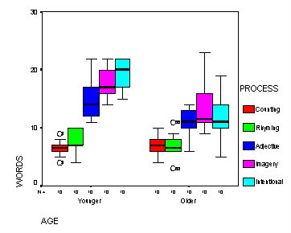

| / Home |
Keywords: Balanced two-way analysis of variance, interaction.
Why do older people often seem not to remember things as well as younger people? Do they not pay attention? Do they just not process the material as thoroughly? One theory regarding memory is that verbal material is remembered as a function of the degree to which is was processed when it was initially presented. Eysenck (1974) randomly assigned 50 younger subjects and 50 older (between 55 and 65 years old) to one of five learning groups. The Counting group was asked to read through a list of words and count the number of letters in each word. This involved the lowest level of processing. The Rhyming group was asked to read each word and think of a word that rhymed with it. The Adjective group was asked to give an adjective that could reasonably be used to modify each word in the list. The Imagery group was instructed to form vivid images of each word, and this was assumed to require the deepest level of processing. None of these four groups was told they would later be asked to recall the items. Finally, the Intentional group was asked to memorize the words for later recall. After the subjects had gone through the list of 27 items three times they were asked to write down all the words they could remember.
| Variable | Description | ||
| Age | Younger or Older | ||
| Process | The level of processing: Counting, Rhyming, Adjective, Imagery or Intentional | ||
| Words | Number of words recalled | ||
Data File (tab-delimited text)
| Eysenck, M. W. (1974). Age differences in incidental learning. Developmental Psychology, 10, 936-941. |
| Howell, D. C. (1999). Fundamental Statistics for the Behavioral Sciences, 4th Edition. Duxbury Press, Pacific Grove, California. |

|
Home - About Us -
Contact Us Copyright © Gordon Smyth |